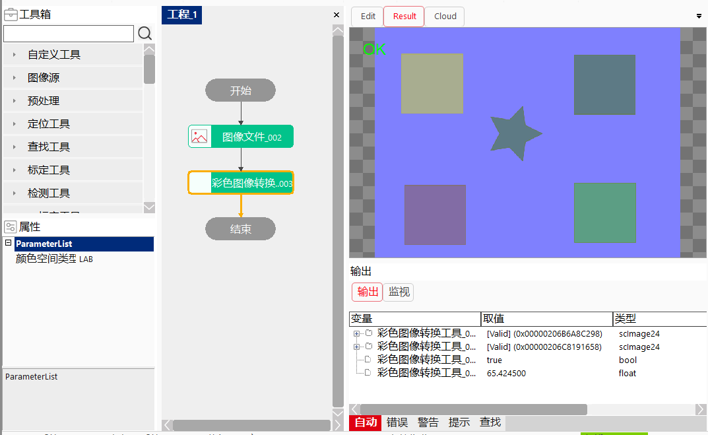

彩色图像转换工具把一副彩色图像转换到想要的颜色空间后输出对应的彩色图像 ，颜色空间包含：HSI、HSV、HSL、LAB。（目前只支持LAB类型空间转换）
效果图如下图所示：

| 分类 | 参数名称 | 参数描述 |
|---|---|---|
| 属性窗口 | 颜色空间类型 | 包括LAB、HSI、HSV、HSL |
| 图像窗口 | 输入图像 | 需要转换的彩色图像。 |
| 数据链 | 输入图像 | 需要转换的彩色图像。 |
| 高级界面 | 无 | 无 |
| 分类 | 参数名称 | 参数描述 |
|---|---|---|
| 输出窗口 | 输入图像 | 需要转换的彩色图像。 |
| 输出图像 | 转换后的彩色图像。 | |
| 执行结果 | 工具执行结果。 | |
| 执行时间 | 工具执行时间。 | |
| 图像窗口 | 输出图像 | 转换后的图像。 |
| 执行结果 | 显示工具执行结果，执行成功显示“OK”，执行失败显示“NG”，同监视窗口的执行结果参数。 | |
| 数据链 | 输入图像 | 需要转换的彩色图像。 |
| 输出图像 | 转换后的图像。 |
无
无
参见“\Samples\彩色图像转换工具.gvp”。